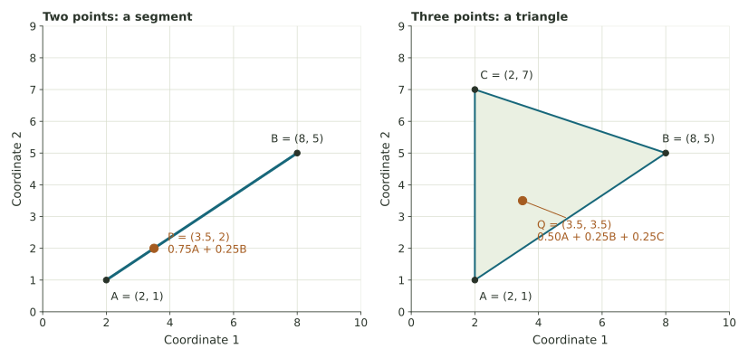

Weighted averages and convex geometry
Compute weighted averages of points, move along a segment, and discover the convex geometry inside one attention calculation.
Average two numbers—or two coordinates at once
A weighted average combines values using different shares. Weights 0.75 and 0.25 mean “three quarters of the first value and one quarter of the second.” They are nonnegative and add to 1.
Now each input is a pair of numbers: A=(2,1) and B=(8,5). Such a list of coordinates is a vector. We can average the first coordinates and then average the second coordinates using the same weights. The answer is another vector, represented by a point.
In an AI attention calculation, one position combines numerical information from other positions through weighted value vectors. Here A and B are invented two-coordinate value vectors. The axes represent numerical features of the input vectors. Real representations can have many coordinates; two let us see the geometry.

Two conditions make the average a convex combination
A convex combination uses nonnegative weights whose total is exactly 1. Unequal weights are allowed. A zero weight leaves that input out. The conditions control the geometry: for two points, the result stays on their joining segment.
Calculate 0.75A + 0.25B
Keep the columns aligned
With A=(2,1) and B=(8,5), the x-coordinate is \(0.75(2)+0.25(8)=1.5+2=3.5\). The y-coordinate is \(0.75(1)+0.25(5)=0.75+1.25=2\). Thus P=(3.5,2).
A receives the larger weight, so the result is nearer A: it is one quarter of the way from A to B. A common reversal is to put the point three quarters of the way from A toward B; that would give B the larger weight.
Increase A’s share and predict the direction
Use \(P=wA+(1-w)B\), with \(0\leq w\leq1\). The two weights always add to 1. At w=1 the result is A; at w=0 it is B; at w=0.5 it is the midpoint.
The geometry follows from the weight conditions
What happens if a condition fails?
Weights 1.2 and −0.2 sum to 1, but one is negative. They give \(1.2A-0.2B=(0.8,0.2)\), beyond A rather than between A and B. Weights 0.75 and 0.75 are nonnegative but sum to 1.5, so they also fail the convex-combination test. Both conditions matter.
Combine three points
Add C=(2,7). Enter nonnegative mixture amounts, then divide by their positive total to turn them into shares. For example, 2,1,1 gives weights 0.50,0.25,0.25 and point (3.5,3.5).
With one weight zero, the result lies on an edge; with all weights positive for these three noncollinear points, it lies in the triangle’s interior. All zero amounts cannot be normalized because there is no positive total to divide by.
This tool normalizes amounts you supply. It isolates the averaging step; it does not model how an AI system learns or computes attention weights.
Where the AI connection begins and ends
In standard softmax attention, the normalized weights form a convex combination of the value vectors for that averaging step. The later combination of heads, projections, and other layers can move a representation beyond that original hull. The segment or triangle is a statement about the specified average, not a boundary for every output of the complete system.
Weights describe how a computation combines inputs. They are not, by themselves, probabilities that claims are true or a complete account of why a model produced an answer.
Optional primary source: Vaswani and colleagues, Attention Is All You Need, §3.2. All vector coordinates and weights in the exercises are constructed examples.